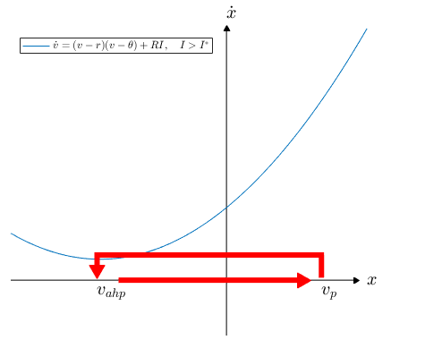

You should have now run your patch clamp experiments and made notes about properties of the neuron. One of the key things you should have noticed is that there was a sudden change in dynamics as you increased \(I\), from the neuron being at rest to the neuron firing spikes called action potentials (APs).
In dynamical systems terms, we call a sudden change in dynamics as we change a model parameter a bifurcation. In the case of the neuron, below a certain value of \(I\) there existed a stable steady state, i.e. the voltage of the neuron was reasonably constant. Above this value of \(I\), the steady state disappeared and the neuron was no longer at rest, i.e. the neuron was spiking. This is an example of a bifurcation in neuroscience.
In this section, you will use a certain type of bifurcation called a saddle node bifurcation to build a mathematical model of the neuron. First, we will go over the saddle node bifurcation, then we will change the equations so that we accurately model the neurons we just recorded in the experiment. Work through this page at your own pace, but please feel free to discuss the concepts with other members of the workshop or ask me questions!
Definition: A bifurcation is a sudden change in dynamics (for example, changes in stability of steady states, or steady states appearing/disappearing) when a parameter (a value in the equations) in the dynamical system changes.
Neurons can be modelled by a bifurcation known as the saddle node bifurcation. Consider the dynamical system
\(\dot v = v^2+\alpha\).
Analyse this system for different values of \(\alpha\). Do you see a bifurcation, i.e. a sudden change in the steady states as \(\alpha\) is varied? Once you've analysed the system, click the "more info" button below to check your analysis and learn more about the saddle node bifurcation.
Consider the equations for a saddle node bifurcation. We can interpret \(v\) as the voltage of the neuron, and \(\alpha\) being related to the current you put into the neuron. To begin with, we will think about the neuron at rest, so \(\alpha=0\). Then there is a saddle steady state at \(v=0\). However, we know in the neuron that the steady state is not at \(v=0\) when no current is injected. In fact, the first piece of data you were asked to collect was the resting voltage of the neuron - this is equivalent to a stable steady state when no current is injected. We will therefore rewrite the above equation as
\(\dot v = v^2 = (v-0)(v-0)\).
Remember, because the neuron is at rest we have set \(\alpha=0\). Changing one of the zeros to the resting voltage (\(r\)) to ensure this is a steady state, we get
\(\dot v = (v-r)(v-0)\).
This is shown in the diagram below. We can clearly see that \(v=r\) is a stable steady state, so this matches the data. Input the value for resting voltage below, and we can start to fit this in the model:
There is still an unstable steady state at \(v=0\) in this model, which does not really reflect anything to do with the neuron. After all, \(v=0\) isn't a threshold below which the neuron goes to steady state and above which the neuron fires. However, this description is exactly the case for AP threshold. So we can interpret our second (unstable) steady state as the AP threshold (\(\theta\)) of the model, and set it as such by writing:
\(\dot v = (v-r)(v-\theta)\).
This model is shown below. You were asked to find the value of AP threshold in stage 3 of the experiment. Input this value below:
Now that we have the resting state dynamics sorted (where input \(\alpha=0\)) we need to think about the case where the neuron is not at rest. In stage 2 of the experiment, we asked to record the value of \(I\) for which the bifurcation occurred. Let us denote this value \(I^*\). To set the model to ensure the model neuron starts firing at this value, we must first bring back our input:
\(\dot v = (v-r)(v-\theta)+\alpha\).
Now, if we write \(\alpha=RI\), where
\(R={1\over 4I^*}(\theta-r)^2\),
it can be shown that the bifurcation in the model will occur if \(I=I^*\). In electrophysiology, the constant \(R\) is known as the membrane resistance. The full proof of this equation can be shown by pressing the button below (if you are interested).
This model is shown below. You were asked to find the value of \(I\) for which the bifurcation occurred in stage 2 of the experiment. Input this value below:
We now have a model of a neuron with realistic membrane potential, action potential threshold, and bifurcation from steady state to non-steady state. However, if \(I\) is high enough that the system is in the "spiking" regime, the model tends to infinity, whilst we saw the real neuron repeatedly fired action potentials. Hence, the current model accurately recreates resting dynamics, but does not capture firing dynamics. In this section and the next, we will focus on making the model replicate spiking dynamics.
When the voltage of the neuron is greater than AP threshold, the neuron fires an action potential and the voltage increases to an AP peak. In stage 4 of the experiment, we asked you to record this AP peak (\(v_p\)). Then, the neuron rapidly resets to a minimum, known as the "AHP". In stage 5 of the experiment, we asked you to record this AHP voltage (\(v_{ahp}\)). In our model, we will wait until the voltage increases up to this AP peak, and then when it does immediately reset it to the AHP voltage. Once it has been reset to the AHP voltage, it will try to increase to infinity again, and once again we reset it once it reaches AP peak. This way, we get regular spiking dynamics.
Insert your values for AP peak and AHP voltage below:
(Note: You can get weird results for \(v_{ahp}>-60\) mV, I recommend setting this to \(-60\).)
Finally, if we were to simulate the model right now, you'll find it fires far faster than the real neuron for any value of \(I > I^*\). We can control the rate at which the neuron fires by adding a "time constant" (\(\tau\)) to the equations, such that the full set of equations reads:
\( \tau \dot v = (v-r)(v-\theta) + RI, \qquad \text{if } v\geq v_p, \text{ then } v \rightarrow v_{ahp}\)
To understand this, we can think back to the car analogy, where \(x\) was the position of the car and \(\dot x\) was it's speed. If we had the simple dynamical system \(\tau \dot x = 10\), then using \(\tau\) we could control the speed of the car. For high \(\tau\) we have low speed, e.g. if \(\tau=10\), then \(\dot x = 1\). But for low \(\tau\) we have high speed, e.g. if \(\tau=2\), then \(\dot x = 5\). The same can be said for our neuron model; increasing \(\tau\) will slow down the firing rate of the neuron.
So how do we choose \(\tau\) in our model?
We can use something called the F-I curve, which stands for frequency-current curve. On the \(x\) axis, we plot the injected current \(I\). On the \(y\) axis, we plot the frequency of APs. We then choose a value of \(\tau\) such that the F-I curve of the model most closely matches the data.
In stage 6 of the experiment, you were asked to inject a range of currents and calculate the frequency of spiking of the neuron. This information can be used to plot the F-I curve of the experimental neuron. In the boxes below, input your data, separated by commas (e.g. if you used currents 1, 2, and 3 \(\mu\)A type 1,2,3 in the "Current" box. If their frequencies were 5, 6, and 7 Hz, type 5,6,7 in the "Frequency" box).
Now, don't worry, you don't have to do the same for the model neuron! An advantage to a simple model like this is that you can get exact equations for the F-I curve of the model. These means we can plot the F-I curve of the model without having to simulate it many times and calculating the spiking frequency.
Try varying the value of \(\tau\) below, and choose a value that makes the simulated and experimental curves look similar.
Now, let's try the model! Choose an input current, and click "Run". On the left, you'll see a patch clamp experiment, and on the right you'll see your simulated model. Does it look good to you?